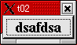

トップページ＞＞＞
「ぷろぐらみんぐ」目次＞＞＞
「Qt Tutorial Index Page」
Chapter 2: Calling it Quits
初版作成：2002/12/27
- ソースコード
- 解説
- コンパイル・動作確認
- いじくりまわす
単にウインドウを作るだけなのが前回のChapter1でした。
今度はボタンを押したら終了するようにしてみましょう。
それに加えてフォント関連もいじくってみましょう。上のスナップショットが今回のプログラムですが、ボタンの文字列
がBoldになっています。それでは、ソースコードです。
/****************************************************************
**
** Qt tutorial 2
**
****************************************************************/
#include <qapplication.h>
#include <qpushbutton.h>
#include <qfont.h>
int main( int argc, char **argv )
{
QApplication a( argc, argv );
QPushButton quit( "Quit", 0 );
quit.resize( 75, 30 );
quit.setFont( QFont( "Times", 18, QFont::Bold ) );
QObject::connect( &quit, SIGNAL(clicked()), &a, SLOT(quit()) );
a.setMainWidget( &quit );
quit.show();
return a.exec();
}
目次に戻る
それでは各行に解説を付け加えていくことにします。
qapplication, qpushbuttonのヘッダファイルのインクルードはChapter1で解説しました。今回はqfont.hを
インクルードします。これによって、Xのフォント機能だけでなく高度に使いやすくなっている（はずの）Qtのフォント
機能を使えるようになります。
#include <qfont.h>
QApplicationを作るあたりは前回と一緒です。
QPushButton quit( "Quit", 0 );
今回は、"Quit"と表示するボタンを作ります。
相変わらず「トップレベルウインドウ」(Win32APIかっつーの)のままですので、親ウインドウとして0を指定します。
ここに関しては原文でも
We still pass 0 as the parent, since the button is a top-level window.
とある通り・・・まあ、ウインドウ系列のプログラミングっつーのはどこも一緒ですか。
んで、WindowControl、じゃなかったWidget(ウィジェット)のサイズを変更します。
quit.resize( 75, 30 );
今回は"Hello, World!"よりは短い文字列なので、その分小さめのウインドウサイズにしてみました。
他にも、Win32APIと同様にQFontMetricsなんっつーのもあるみたいです。これをつかえば、文字列に応じた
ウインドウサイズにできそうですね。
quit.setFont( QFont( "Times", 18, QFont::Bold ) );
ここで、Timesファミリーのフォントで18ポイント、ボールドなフォントにこのボタンウィジェットに対してのみ
変更しています。アプリケーション全体で一度にフォントを変更するにはQApplication::setFont()を使えるみたいです。
QObject::connect( &quit, SIGNAL(clicked()), &a, SLOT(quit()) );
connect()関数はおそらく、Qtの最たる特徴でしょう。connect関数はQObjectクラスの静的関数(static function)であること
に注意してください。socketライブラリのconnect()関数とも混同しないようにしてください。
こっからがQtのつぼ、というかキモ、というか。
今回のconnect()関数は、二つのQtオブジェクト（直接的にせよ間接的にせよ、とにかくQObjectから派生しているやつ）を
結びつけるための手法の使い方の一つです。
Qtオブジェクトはメッセージを送るためのシグナル(signal)と、メッセージを受け取るためのスロット(slot)
を実装することができます。
全てのWindowControlsじゃなかった、WidgetはQtオブジェクトです。とゆーのは、WidgetはQWidgetクラスを元にしていますが
QWidgetとユーのはそもそもQObjectから派生しているからです。
んで、今回はquitプッシュボタンが備えているclicked()（とーぜん、マウスでクリックしたとき）とQApplicationクラス
のオブジェクトである a のquit()スロットを結んでいます。
これによってボタンがクリックされると clicked()シグナルが発生しそれによりQApplication::quit()が実行されるわけです。
SIGNAL とか、SLOTとかゆーのはQtが定義しているマクロです。これのおかげでただの関数がシグナルとかスロットに化ける
らしいのですが・・・まだまだよく分かんないっす。なんでも、メタオブジェクトコンパイラ(Meta Object Compiler:moc)
とかいうのに処理されているらしいのですが・・・。まだ、パス。
後はChapter1と一緒で、setMainWidgetして、show()して、returnしておしまいです。
目次に戻る
んじゃあ、コンパイルしてみましょう。
[fenjin@murasame t02]$ progen -n t02 -o t02.pro
[fenjin@murasame t02]$ tmake -o Makefile t02.pro
[fenjin@murasame t02]$ ls
Makefile t02.cpp t02.pro
[fenjin@murasame t02]$ make
g++ -c -pipe -Wall -W -O2 -DNO_DEBUG -I/usr/lib/qt/include -o t02.o t02.cpp
g++ -o t02 t02.o -L/usr/lib/qt/lib -L/usr/X11R6/lib -lqt -lXext -lX11 -lm
[fenjin@murasame t02]$ ls
Makefile t02* t02.cpp t02.o t02.pro
んで、実行してみると冒頭に示したようなウインドウが表示され、ボタンを押すと終了します。
目次に戻る
・・・まずは、QFontMetricsで遊んでみましょうか。QFontMetricsをQtのドキュメントから引いてみると、
QRect QFontMetrics::boundingRect ( const QString & str, int len = -1 ) const
int QFontMetrics::height () const
int QFontMetrics::width ( const QString & str, int len = -1 ) const
と、使えそうなメンバ関数が並んでいます。とりあえずheight()とwidth()だけをさくっとresize()に渡してみましょう。
とゆーわけでソースコードを変更します。
修正前：
QPushButton quit( "Quit", 0 );
quit.resize( 75, 30 );
quit.setFont( QFont( "Times", 18, QFont::Bold ) );
修正後：
QString str("hogehogefoobar");
QPushButton quit(str, 0);
QFontMetrics fm(QFont("Times", 18, QFont::Bold));
//quit.resize(75,30);
quit.resize(fm.width(str), fm.height());
quit.setFont(QFont("Times", 18, QFont::Bold));
まずボタンに表示する文字列をQStringクラスのオブジェクトにしてしまいます。というのはwidth()メンバに渡す必要が
あるからです。んで、それでもってQPushButton()を実行します。
次にQFontMetricsクラスのオブジェクト、fmを生成します。QFontMetricsのコンストラクタの一つに
QFontMetrics::QFontMetrics ( const QFont & font )
こんなのがあったんで、QFontを直接渡してます。
んでもって、後は fm.width(QString, len=-1) と fm.height() を resize() に渡しておしまいです。
width()メンバ関数は、第二引数のlenで実際に幅を返す文字列長を指示します。-1を指定するとQStringで渡されてきた
全ての文字列の幅を返します。
height()は引数をとりません。
実行画面を示します。
・・・もう少しいじってみましょう。文字列を指定できるよう、コマンドラインから引っ張ってきましょう。
QApplication::argv()[]を使えばなんとなかなりそうではありませんか？
というわけで、ソースを又変更します。
修正前：
QPushButton quit( "Quit", 0 );
修正後：
QString str( (a.argc() > 1) ? a.argv()[1] : a.argv()[0] );
一応、引数がなにも指定されていなかった場合は実行ファイル名それ自身を表示するようにしています。
んで、その実行結果です。
[fenjin@murasame t02]$ ./t02
[fenjin@murasame t02]$ ./t02 dsafdsa

本当はQFontMetrics::boundingRect()とかも試してみたかったのですがそこまでいくとQtのフォントシステムの話にまで
いってしまいそうだったんで今回は控えました。
というかフォントシステム、全然知らないので。
まあでも、だいぶ遊べるようになってきました。
目次に戻る
トップページ＞＞＞
「ぷろぐらみんぐ」目次＞＞＞
「Qt Tutorial Index Page」